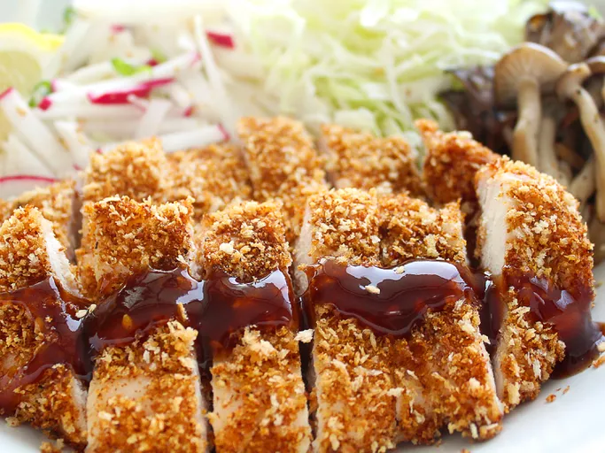

Chicken Katsu
Chicken katsu is Japanese-style fried chicken. This is my family recipe and can also be used to make tonkatsu by using pork cutlets instead of chicken. Serve with white rice and tonkatsu sauce.
Ingredients
- 4 skinless, boneless chicken breast halves - pounded to 1/2 inch thickness
- salt and pepper to taste
- 2 tablespoons all-purpose flour
- 1 egg, beaten
- 1 cup panko bread crumbs
- 1 cup oil for frying, or as needed

Steps
- Season chicken breasts on both sides with salt and pepper. Place flour, beaten egg, and panko crumbs into separate shallow dishes. Coat chicken breasts in flour, shaking off any excess; dip into egg, and then press into panko crumbs until well coated on both sides.
- Heat oil in a large skillet over medium-high heat. Place chicken in the hot oil, and fry until golden brown, 3 or 4 minutes per side. Transfer to a paper towel-lined plate to drain.